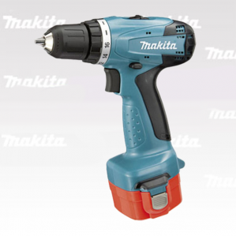
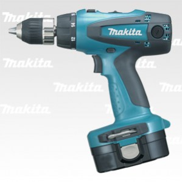
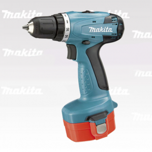

Аккумуляторная дрель-шуруповерт Makita 6281DWPE (Ni-Cd; 14,4V; 1.3Ah; 36Нм; 0-1.300 об/мин.; 1.6кг)
{kind=link}
Цена: 5 947 руб.
Нет в наличии
- Аккумуляторная дрель-шуруповерт Makita 6281DWPE предназначена для работы с шурупами и саморезами, а также для просверливания отверстий.
- Мощный мотор гарантирует высокую производительность.
- Есть возможность регулировки крутящего момента (в зависимости от вида работ).
Комплектация:
- Аккумулятора
- Зарядное устройство
- Двусторонняя бита
- Чемодан
- Инструкция на русском языке
Гарантия производителя 1 год
Характеристики
| Тип инструмента | безударный |
|---|---|
| Тип патрона | быстрозажимной |
| Количество скоростей работы | 2 |
| Питание | от аккумулятора |
| Диаметр патрона | 1 — 10 мм |
| Макс. число оборотов холостого хода | 1300 об/мин |
| Максимальный крутящий момент | 36 Н·м |
| Макс. диаметр сверления (дерево) | 25 мм |
| Макс. диаметр сверления (металл) | 10 мм |
| Возможности | реверс, фиксация шпинделя, электронная регулировка частоты вращения |
| Тип аккумулятора | Ni-Cd |
| Емкость аккумулятора | 1.3 А⋅ч |
| Напряжение аккумулятора | 14.4 В |
| Время зарядки аккумулятора | 1 ч |
| Тип зарядного устройства | импульсное |
| Комплектация | два аккумулятора, зарядное устройство, кейс |
| Вес | 1.6 кг |
| Длина | 192 мм |
Похожие товары
-

Аккумуляторная дрель-шуруповерт Makita 6271DWPE (Ni-Cd; 12V; 1.3h; 30Нм; 0-1.300 об/мин.; 1.5кг)
-

Аккумуляторная дрель-шуруповерт Makita 6347DWDE (Ni-MH; 18V; 2,5Ah; 80Нм; 0-1.300 об/мин.; 2,4кг)
-

Аккумуляторная дрель-шуруповерт Makita 6281DWAE (Ni-Cd; 14,4V; 1,9Ah; 36Нм; 0-1.300 об/мин.; 1.6кг)
-

Аккумуляторная дрель-шуруповерт Makita 6271DWAE (Ni-Сd; 12V; 1,9Ah; 30Нм; 0-1.300 об/мин.; 1.5кг)